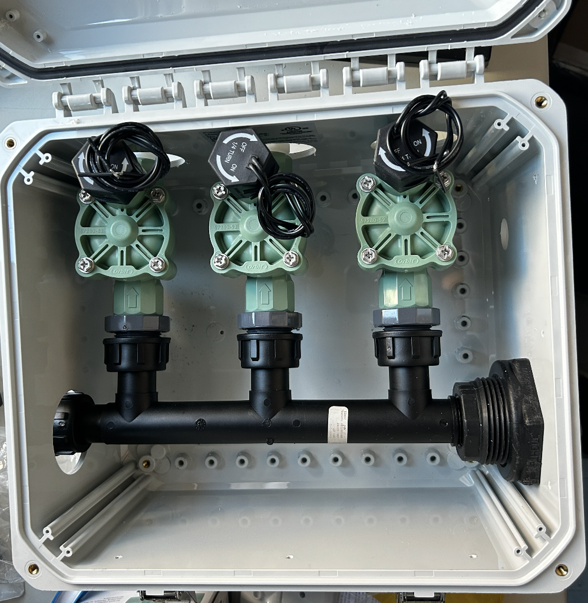
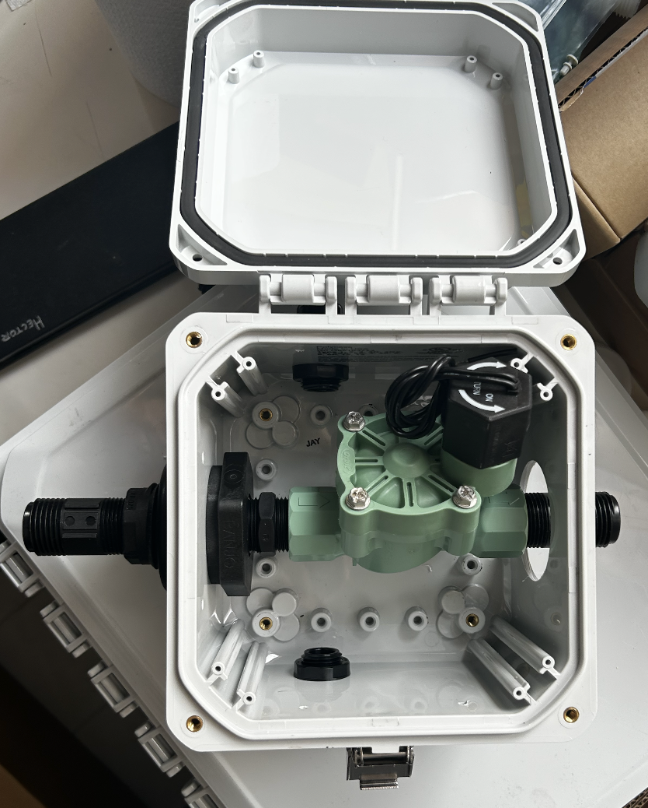

Three-Valve Manifold
Routes fluid to three controlled zones from one enclosure-mounted manifold assembly.
Product Engineering
Outdoor manifold systems for controlled rooftop deicing. I helped develop two early product variants that route deicing fluid through wired valve control, giving users more control over where fluid is delivered across a roofline.


The goal was to turn a new deicing concept into buildable manifold hardware. The system needed to fit inside an outdoor enclosure, connect cleanly to tubing, and support controlled fluid delivery without making installation harder than it needed to be.
The work centered on balancing product function with manufacturability: valve placement, enclosure layout, tubing access, and the documentation needed to make repeatable builds possible.
Both variants use a similar enclosure, valve, fitting, and tubing architecture. The three-valve model supports separate outlet zones, while the single-valve model keeps the same basic concept in a smaller configuration.
Each valve is actuated through a wired connection to a central control box, keeping the product simple to control while avoiding onboard electronics inside each manifold.
The two configurations were developed around the same core architecture, with the valve count changing based on how much zone control the installation required.
Routes fluid to three controlled zones from one enclosure-mounted manifold assembly.
Provides a simpler controlled outlet for installations that do not need multiple zones.
Uses similar fittings, enclosure features, wiring paths, and manufacturing documentation.
I created EBOMs, MBOMs, and SOPs to support assembly, sourcing, and repeatable manufacturing. This included defining the parts needed for each configuration and translating the design into practical build steps.
I also built Airtable tools for kit development, inventory tracking, and product weight estimates, which helped connect engineering decisions to purchasing and fulfillment needs.
Captured the design-level parts required for each manifold configuration.
Converted the design into buildable manufacturing documentation.
Tracked kit contents, inventory, and estimated product weight.
Testing focused on valve cycling and sprayer compatibility. The valve work checked repeated actuation behavior, while the sprayer work compared brands, sprayer types, and tubing types for use with the product.
Repeated cycling tests were used to evaluate actuation behavior over extended use.
Sprayers were compared across arc angles for range and coverage in the target zone.
Forty trials across five days helped identify the best sprayer and tubing combination.
This project gave me experience moving from product concept to manufacturing-ready documentation. The design work mattered, but so did the supporting tools: bills of materials, assembly procedures, inventory tracking, and tests that made the product easier to build and evaluate.